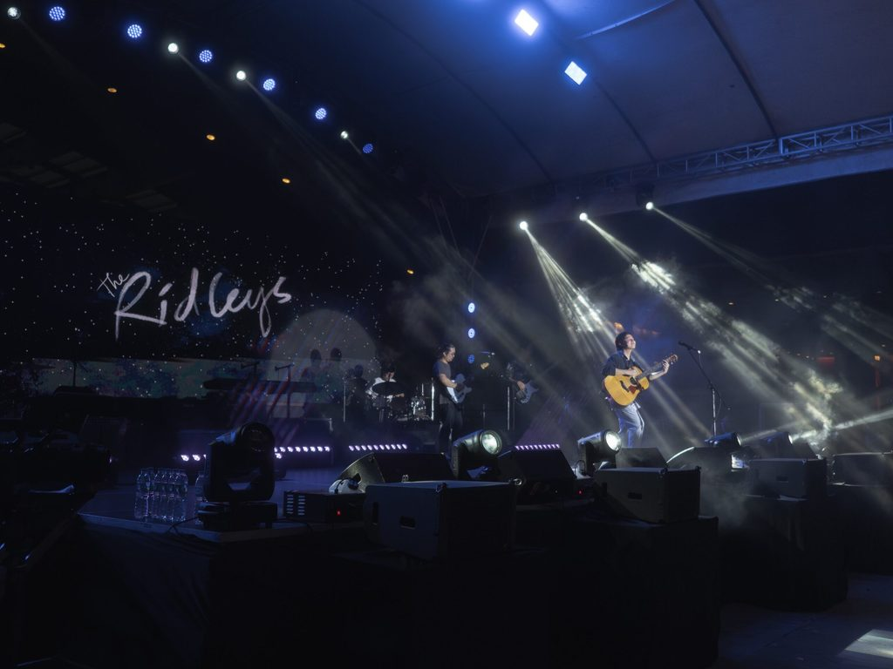

The Story
About The Ridleys
The Ridleys is an alternative-folk band that tells stories through their songs. Formed in 2016, the band released their debut Aphrodite EP, marking the beginning of a musical journey that has taken them from intimate venues to sold-out concerts.
With their third studio album, All These and More (2024), and two sold-out major concerts, Someday We’ll Make a Home at the Music Museum, The Ridleys continue to grow and solidify their reputation as one of the most compelling acts in the music scene today.